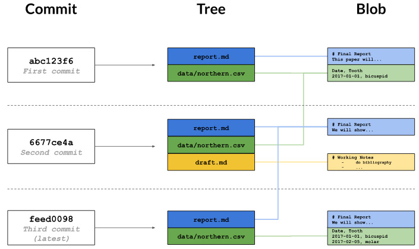
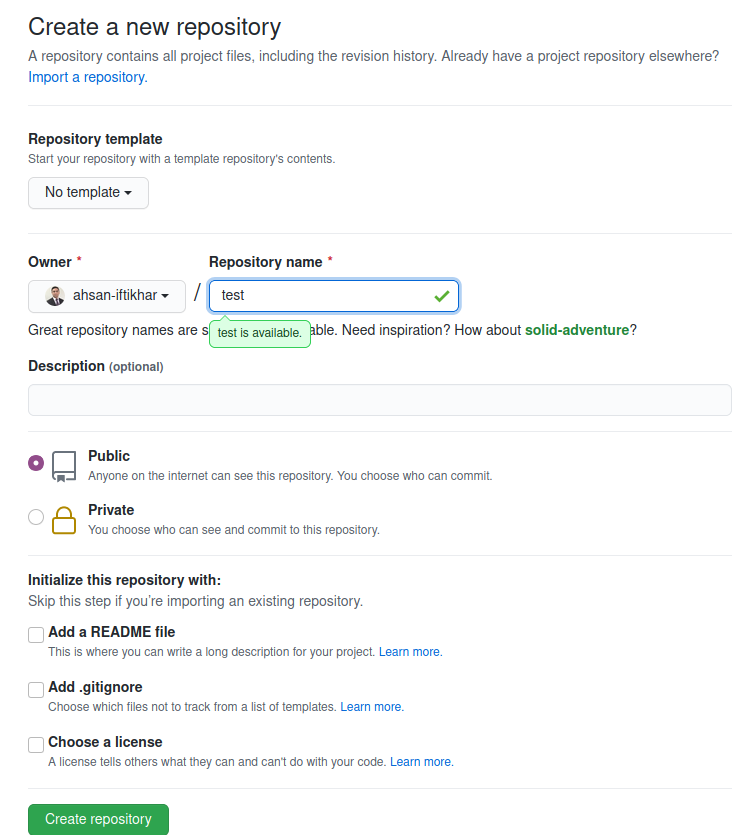
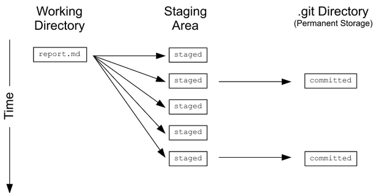

git config --global user.name "Your Name"
git config --global user.email "your.email@domain.com"
git config --global password "Password"This blog is aimed at novices who are taking their first plunge in understanding and applying version control using git and github. It is suggested to use the mind map and then cover one to two topics in a day.
Be considerate that version control and effective use of terminal will take some time. Best wishes and happy learning.
Part 1 - What? Why? When?
Basic Concept
Can you relate to the following?
If yes then version control using git and github is for you.
A code file is shared with multiple peer for review, wherein each of reviewers will be making updates, giving comments and refactoring the code. During this process you will also be making concurrent changes and a mechanism is desired to track all such changes and make the updates in the final document.
Benefits
Git and github specifically addresses the challenge of multiple contributors working on the same project. Key benefits are listed below.
- Ability to track changes and updates by different contributor and reviewers.
- Allowing roll back to prior versions.
- Documentation, via explanatory messages is enforced for future reference. This provide better context to others involved in the project.
- Git automatically notifies when the current work conflicts with someone else’s, so it’s harder (but not impossible) to accidentally overwrite work.
Typical use cases
- Collaborative projects with multiple contributors.
- Open and closed source projects.
- Formal tracking of different version during numerous stages of development.
- Ability to revert of earlier version, should things don’t work out as planned.
Part 2 - Framework & Nomenclature
After getting an understanding of what git is and what problem it addresses, it is important to get an overview of the framework and key terminologies. These specific terminology will feature time and again. Following, definitions aims to communicate an intuitive essence of the concept, but may not exactly match the official explanation from Git.
1. Repository - It is simply the project or folder where all the related directories and files are organized.
Other than the project files and folders, repository also contains an additional folder ‘.git’. This folder is organized in a particular way by git and should not be changed manually.
2. Staged - A temporary area where the files are placed before formally recording (or committing) a snap shot of the file/data.
3. Commit - An area to be considered as a vault where the files are saved and tracked for version control. On a technical level commit contains the metadata about the author, time of the commit and the message to define what updates where made in the commit.
4. Tree - Cascading relationships of all the files being tracked for version control. It is called as a tree structure since the file have a sort of linked relationship. with each previous version and this is best demonstrated via a tree structure.
On a technical level, tree tracks the names and locations in the repository and when a commit happened.
5. Blob - Blob is a compressed snapshot of the contents of the file. A blob is maintained for each of the files listed in the tree structure.
6. Hash - Hash is unique identifier for each commit. This hash is normally generated as a 40-character hexadecimal string like 7c35a3ce607a14953f070f0f83b5d74c2296ef93, but most of the time, only first 6 or 8 characters are sufficient to identify a commit.
If two files are the same, their hashes are guaranteed to be the same

Part 3 - Setting-up git
System, global & local
Setting up version control via git is a straight forward process, however, git setting are applied at three different levels.
- –system: settings for every user on a computer.
- –global: settings applied to every project.
- –local: settings for one specific project.
Each level overrides the one above it, so local settings (per-project) take precedence over global settings (per-user), which in turn take precedence over system settings (for all users on the computer).
Most of Git’s settings should be left as they are. However, there are two should be set on every computer. Name and email address. These are recorded in the log every time a commit is made, and are often used to identify the authors of a project.
Use the following code to set the user name, email address and password.
Note: All git commands will have the word ‘git’ as a prefix to all the commands.
Creating Repository
New Project (on local machine)
New project folder can be started from scratch. The other possibility is using an existing directory and apply version control to it. Both the methods are described below.
1. New git project: Entering the following command in the terminal will create a named directory, within which the .git folder will be created by default.
git init project_name2. Existing folder: In the path of the folder, use the following command to initiate version control for that folder. The command will create a folder .git.
git initCloning a project
Cloning a project is simply making a copy of an existing project; hosted on some server (either on the cloud or on-premises). For a basic comprehension, consider it like getting a copy of the files located on ‘DropBox’ or ‘Google Drive’ to local machine.
To create a clone we need the address or URL of the hosting provider and following command is used for creating a copy.
# Cloning a local project
git clone /existing/project newprojectname
# Cloning a hosted project
git clone https://github.com/URL newprojectnameNote: URL for the hosted project can be easily obtained from the github or other hosting provider.
Ignoring Files from Version Control
Often temporary or intermediate files are created, which are not required to be saved. Git can ignore these files or group of files (based on a specified pattern) by creating a file called .gitignore in the root directory of the repository.
.gitignore can contain a list of wildcard patterns that specify the files that Git should ignore.
Deleting files
To delete a file use the following command in the terminal.
git rm path/to/fileRemoving Untracked / Unsaved Files
These are the files which have been identified in .gitignore file.
Git can clean up files that are not tracked. The command git clean -n will show a list of files that are in the repository, but whose history Git is not currently tracking. A similar command git clean -f will then delete those files. The command should be used with care. if deleted the files are gone for good.
Part 4 - Branching
A file or document has to be shared with other stakeholders in the project. They make a copy of it and start making changes on it. Many have a tendency to make copy of such file as with suffix “rcvd_frm_person” and then all the modifications done are sufficient as “rcvd_frm_person_modi_aiq_date”. One can already see that this process gets quite challenging after only a couple of iterations.
Branching is the exact process of making a copy of repository; making all the updates and later such changes are pushed to the main repository.
To get a list of all the branches in the current repository use the following command in the terminal. The active branch will be represented by an asterik.
git branchSetting up a branch
By default, every Git repository has a branch called ‘main’ or ‘master’,
Setting up a branch is quite easy and it can be accomplished by using the following command in the terminal. This is an efficient way to creating the branch and shift to that branch.
# Method 1 - Creating a branch and switching to it (preferred option)
git checkout -b branch_nameThe above can also be accomplished by first creating the branch and then shifting to it. Because in involves two steps, the method stated above is preferable.
# Method 2 - Creating a branch first and then switching to that branch
# Create the branch
git branch branch_name
# Shift to the branch
git checkout branch_nameSetting up Github
Most of the times, a project or repository will be hosted on some external or cloud based service provider. Github, Bitbucket and other services provides the hosting services. In this blog we’ll focus on Github (although the process is quite similar for other service provider). Creating an account on Github is as simple as creating a new email address. Sign-up here on Github I trust that creating an account will not be challenging.
Once the account has been created. Thereafter, simply create a new repository and get the URL for the repository. See the following snapshot for guidance.


Connecting Remotes
Hosted version of repositories are termed as remote and identified with a name. Default host name is ‘origin’, however, any custom name is also possible. A remote is like a browser bookmark with a name and a URL.
List of the remotes can be obtained using the command.
git remote
# or
git remote -vWhile inside the repository in the local folder use the following command in the terminal to connect to the hosted repository.
git remote add remote_name URL/github.comIt is important to note that the above is not required if a repository has been cloned, since in that case the remote named ‘origin’ is already defined by default.
In case when the remote URL has to added via terminal, use the following command. This is especially useful if you plan to use ‘ssh’ to connect with github.
git remote set-url origin URL_obtained_from_githubIn order to remove a remote already defined for a repository, use the following command.
git remote rm remote-namePart 5 - Pull, add, commit, push & status
Following the previous steps, a git hub repository has been setup and connected to the remote host. Now we are ready to truly leverage the power of version control. However, before going into the specifics it useful to get acquainted with the following key terms. An attempt has been made to introduce these terms in an intuitive manner.
Pull is an action of getting all the updates and changes from the remote into your local repository.
Add Adding is an action to put the updated local files in the staging area. The idea is to commit the added files.
Committ Action to formally record updates to a repository and identify it with message, explaining what changes had been made.
Push is an action of dispatching all the local changes to the remote; so that other working on the same project can pull those changes.
Status is the equivalent to what ‘ls’ command is to linux terminal. It basically lists down the current status of repository.

Addition of files (to staging area)
To add a file to the staging area, use the following command
# To add a specific file (in the following case file is filename.txt)
git add filename.txt
# To add all the files in one go
git add .If there is a mistake and the file has been staged, it can be un-staged using the following.
# To undo additions from staged area, back to local drive
git reset HEAD
# Undo addition of a specific file from staged area, back to local drive
git reset HEAD path/to/fileIf however, the changes made to a file, which is not staged yet, has to reversed then use the following command in the terminal.
# Reverse changes to a file
git checkout -- path/to/fileCommit additions
It saves everything in the staging area as one unit. Upon committing, Git requires to enter a log message. Log message documents why the change was made and what changes have been made.
By default, Git launches a text editor, however, to keep things simple, use the option -m “some message in quotes” in the terminal to enter a single-line message. If a commit message is accidentally mistyped then use –amend flag.
# Commit the files/data in the hosted areas
git commit -m "An explanatory message for future reference"
# Correcting a commit message with --amend
git commit --amend -m "new message"It is possible to add files and commit changes at the same time, using one single command by adding the option -a
git commit -a -m "message for the commit"Good Practice For Commits
Writing a one-line log message with git commit -m “message”is good enough for very small changes, but collaborators (including your future-self) will appreciate more information about the commit and what changes were made. Good practice for commits is stated below, by means of an example.
1) Don’t put all of the changes into the staging area at once. For example, suppose while adding a feature to file x, an error is spotted in another file y. Fix the change in y
2) Since the changes to file y aren’t directly related to the work being done in x, there should be a commit for the fixed version of y.
3) Thereafter, there should be a separate commit of the features added in the file x.
Push to repository
Git push command, pushes the changes made locally into a remote repository. The following command pushes the contents of branch named ‘branch-name’ into a branch with the same name in the remote repository associated with named ‘remote-name’.
git push remote-name branch-name
# A practice example
git push origin main # 'origin' is the remote name and 'master' is the branch nameIt’s possible to use different branch names at your end and the remote’s end, but doing this quickly becomes confusing: it’s almost always better to use the same names for branches across repositories.
Pull from repository
A typical workflow is to pull collaborators’ work from the remote repository so one have the latest version of everything. Then perform some updates yourself and push such changes back to the remote so that collaborators have access to it.
Pulling changes is straightforward: with the following command, gets everything in a branch for a particular remote and merges it into the current branch of local repository.
git pull remote branch1
# A practice example
git pull origin main # 'origin' is the remote name and 'master' is the branch nameGit stops from pulling changes from a remote repository when doing so might overwrite things done locally. The fix is simple: either commit local changes or revert them, and the pull again.
Status of repository
Status of the repository needs to be frequently referred while working. This is achieved by using following command, which displays a list of the files that have been modified since the last time changes are saved. It also shows files that are in this staging area.
git statusPart 6 - Changes & differences
Log of changes
Log is a list of all the commits i.e. updates and changes made to the files. Again to draw parallels it is similar to ‘ls’ command of the linux terminal, however, in this case it lists down all the commits made fo repository.
git logLog entries are shown most recent first, and look like this:
commit 0430705487381195993bac9c21512ccfb511056d
Author: Rep Loop <test@test.com>
Date: Wed Sep 20 13:42:26 2017 +0000
Added year to report title.The commit line displays a unique ID for the commit called a hash. The other lines tells who made the change, when, and what log message wrote for the change.
A project’s entire log can be overwhelming, so it’s often useful to inspect only the changes to particular files or directories.
Git log has additional options, which are very useful to see a visual representation of all the commits and how the tree structure has evolved. The following command is a bit long, however, after multiple uses it will become second nature.
git log --all --decorate --oneline --graphChanges to files
- Changes made in the commit: Using the git log first identify the commit of interest and identify it’s hash value. Based on the commit we are interested in, get the hash number (first 5 or 6 values) and then use the following to list the changes.
git show 6a43f- Changes made to a particular file git log displays the overall history of a project or file, but Git can give even more information. The command git annotate print, who made the last change to each line of a file and when.
git annotate file.txtDifference - working directory to staged
The section, demonstrates how to identify the difference in files.
Scenario: Updates are made to file in local working director, however, such changes have not been staged. To ascertain the difference between the local file (unstaged to staged), use the following command.
git diffNote: There is a possibility that we have added a file in the staged area (without committing) and later we have gone ahead and made further changes in the file in the local working directory.
In such cases, my experience has been that ‘git diff’ will point out the difference from the HEAD (commit). This is based on my understanding and experience till now. In the future if there is any further insights, then I’ll update this blog post.
Difference - staged to HEAD (commit)
The following shows the difference or changes between the staging area and the HEAD (commit)
git diff --staged # This one is preferred by me
# or
git diff --cached
# or
git status -vDifference - working directory & staged to HEAD (commit)
The following shows the difference or changes between the working directory and the HEAD (commit)
git diff HEAD
# or
git status -vvDifference between commits
To get the difference between two commits, use the following command
git diff 89282ax..237282sxReading the git diff output
A diff is a formatted display of the differences between two sets of files. Git displays diffs like this:
diff --git a/report.txt b/report.txt
index e713b17..4c0742a 100644
--- a/report.txt
+++ b/report.txt
@@ -1,4 +1,4 @@
-# Seasonal Dental Surgeries 2017-18
+# Seasonal Dental Surgeries (2017) 2017-18
TODO: write executive summary.Following is the interpretation of the output of diff command.
- The command used to produce the output (in this case, diff –git). In it, a and b are placeholders meaning “the first version” and “the second version”.
- An index line showing keys into Git’s internal database of changes.
- — a/report.txt and +++ b/report.txt, indicate lines being removed are prefixed with -, while lines being added are prefixed with +.
- A line starting with @@ tells which lines the changes are being made. The pairs of numbers are start line,number of lines changed. Here, the diff output shows that 4 lines from line 1 are being removed and replaced with new lines.
- A line-by-line listing of the changes with - showing deletions and + showing additions. Lines that haven’t changed are sometimes shown before and after the ones that have in order to give context; when they appear, they don’t have either + or - in front of them.
Part 7 - Merging repositories
Git represents a tree like structure wherein there is either a
- Linear relationship or
- Complex relationship for three way merge.
Both of these merger operations are defined below. However, once the merge has happened it is customary to delete the branch.
Fast forward merge
This is a merge wherein the branch has moved forward as compared to the ‘main’ or the ‘master’ branch. The merge in this case is rather straight forward linear linkage, wherein the content of the ‘master’ or ‘main’ branch is updated with the changes/updates made in the branch.
# Method 1 - Shift to the target branch and merge
checkout destination_branch
git merge origin_branch
# Method - Directly merging
git merge origin_branch destination_banch
# Deleting the branch locally
git branch -d origin_branch
# Deleting the branch on github
git push -d origin branch_nameIn order to check which of the branches have been merged, use the following command in there terminal to list the branches which have been merged.
git branch --merged3 Way merge
3 way merge occurs, when the child branch has moved on and at the same time there have been changes in the master branch. Such type of scenarios are common for larger projects, where the child branch is used for some feature addition, however, the ‘master’ or the ‘main’ branch is also updated for addition bug fixes or feature updates.
The code for the three way merge remains the same as stated above.
For 3 way merges, Git looks at multiples commits: first the base commit from which the branches started from and then the last commits for all of the branches.
Managing conflicts
Merging is a challenging process wherein we have to merge and resolve the conflict. The chronology of the steps is: merge first, then use the diff command to identify and resolve conflicts.
- Use the git merge source destination to merge two files. In this case, source is the branch on which one is working whereas destination is the branch on which we want to eventually update all the changes.
In this case we will get notice that “Automatic merge failed; fix conflicts and then commit the result.”
After merging use git diff source destination to identify all the differences.
Then we have to manually adjust any conflicts that have been made using the nano text editor. The conflict is highlighted in the following format and it is user’s role to retain the correct modification from the following error.
While making the edits, delete Git markers i.e. <<<<<<<, ========= and >>>>>>>>> and the changes which have to be deleted.
<<<<<<< destination-branch-name
...changes from the destination branch...
=======
...changes from the source branch...
>>>>>>> source-branch-nameOnce the conflicts have been resolved then we add and commit the updated file.